1.1 Uma foto é uma grade de números
Uma foto é feita de quadradinhos chamados pixels. Em tons de cinza, cada pixel tem um número: 0 é preto; 255 é branco. Os valores entre eles são tons de cinza.
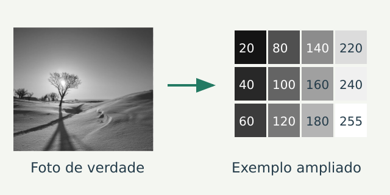
A pergunta: podemos guardar menos números e ainda montar uma foto parecida?
Uma foto é feita de quadradinhos chamados pixels. Em tons de cinza, cada pixel tem um número: 0 é preto; 255 é branco. Os valores entre eles são tons de cinza.

A foto do experimento tem 296 linhas e 336 colunas. São 99.456 números. O pesquisador quis descobrir se poderia descrevê-la com menos números.
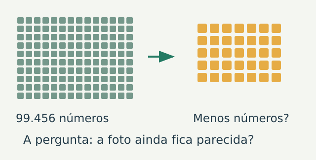
O palpite: poucas peças podem bastar para montar uma imagem parecida.
O pesquisador usou a SVD, um cálculo que divide uma tabela em peças. Cada peça é um padrão de áreas claras e escuras. Somar todas devolve a foto.
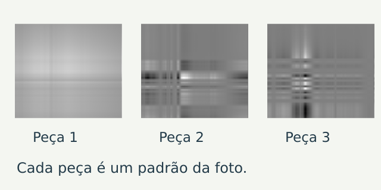
No diário, essas peças também são chamadas de camadas da SVD.
Cada peça usa duas listas e um peso. Uma lista fica na vertical; outra, na horizontal. Multiplicamos os números em cada cruzamento. O peso, chamado σ (sigma), multiplica o padrão inteiro.
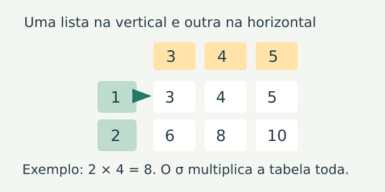
Guarde a diferença: as listas definem o padrão; o σ controla sua intensidade.
Somamos os números da mesma posição. Uma peça pode acrescentar ou retirar brilho. Por isso aparecem números negativos nas peças.
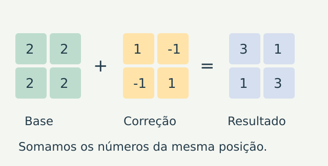
Nesta foto, a SVD calcula até 296 peças. Elas vêm ordenadas do maior σ para o menor. O pesquisador pegou as primeiras 35 e somou.
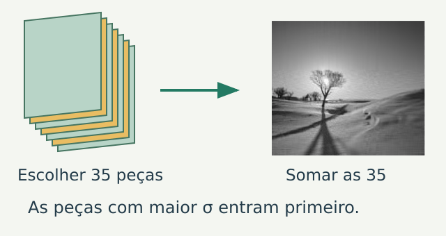
O computador fez esse cálculo diretamente. Nenhuma inteligência artificial foi treinada nesta sessão.
Com uma peça, a imagem fica muito simples. Ao somar outras peças, a árvore e as sombras ficam mais nítidas.
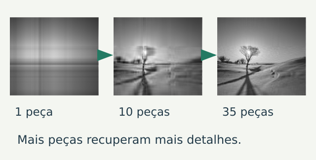
Para guardar uma peça, precisamos de 296 números na lista vertical, 336 na horizontal e um σ: 633 números.
Para 35 peças: 35 × 633 = 22.155 números.
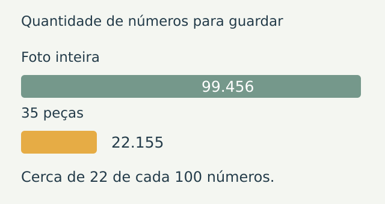
Essa conta compara quantos números guardar. O tamanho do arquivo também depende de como esses números são salvos.
O pesquisador mediu a energia: uma conta que soma os quadrados dos σ. Veja um exemplo pequeno antes do resultado da foto.
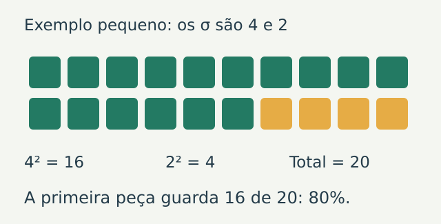
Na foto real, as 35 peças preservaram 99,8% da energia. Isso não significa 99,8% dos detalhes que nossos olhos percebem: o brilho geral também pesa bastante nessa conta.
O que aprendemos: nesta foto, 35 peças produziram uma imagem parecida usando 22,3% da quantidade de números. Outras fotos podem precisar de mais peças.
Sessão 1 do diário original · Descrição do experimento · Programa usado · Foto original.
As reconstruções usam a fotografia original. Os desenhos da tabuada, da soma e dos quadrados de energia são exemplos para explicar as contas.
Continuar para a sessão 2: escolher o modelo.
Já usamos a SVD numa foto. Agora precisamos escolher um modelo de visão para estudar seus pesos.
Um modelo de visão recebe uma imagem e faz cálculos com ela. Esses cálculos usam tabelas de números chamados pesos. O treino ajusta esses números.
A tese quer observar o que muda nessas tabelas quando o modelo aprende uma tarefa nova. Mas qual modelo escolher?
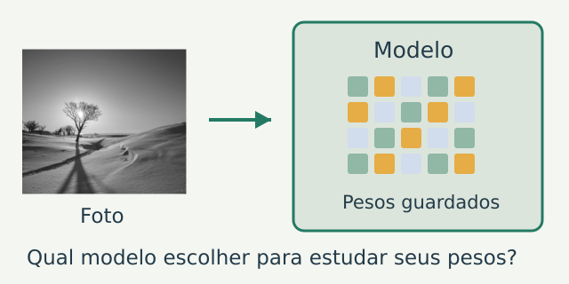
O palpite: um modelo pequeno e que possa receber tarefas diferentes é um bom começo.
O pesquisador leu três artigos. Cada um ajuda a entender uma parte da escolha: como relacionar informações, como trabalhar com fotos e como reaproveitar um modelo já treinado.
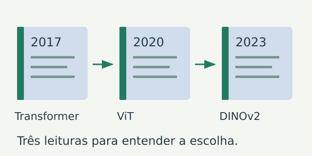
O primeiro artigo, Attention Is All You Need (2017), apresentou o Transformer. Uma ideia central é a atenção: cada parte da entrada pode usar informações de outras partes.
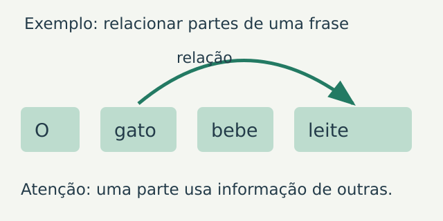
Essa ideia apareceu no trabalho com textos e depois foi usada com imagens.
O segundo artigo, An Image Is Worth 16x16 Words (2020), apresentou o Vision Transformer, ou ViT. Ele divide a foto em pedaços, chamados patches, e transforma cada pedaço numa lista de números.
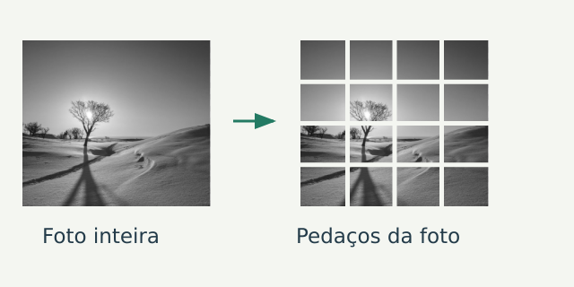
O Transformer passa a relacionar esses pedaços. Assim, uma região da foto pode usar informações de outras regiões.
O terceiro artigo, DINOv2 (2023), apresentou modelos de visão treinados com cerca de 142 milhões de imagens, sem depender de rótulos escritos por pessoas para esse treino.
Uma das ideias é aproximar os resumos numéricos de versões da mesma imagem. O treino aprende padrões visuais sem precisar receber a palavra “árvore” junto de cada foto.
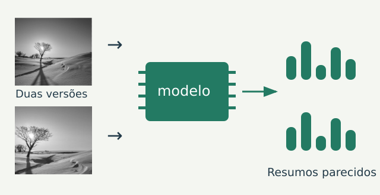
Esse aprendizado anterior é o pré-treino. A pesquisa pode começar com esses pesos prontos e depois ajustá-los para outra tarefa.
O pesquisador escolheu a versão Small, que significa “pequena”. Ela tem cerca de 22 milhões de pesos e permite realizar os experimentos com a placa de vídeo de 12 GB disponível.
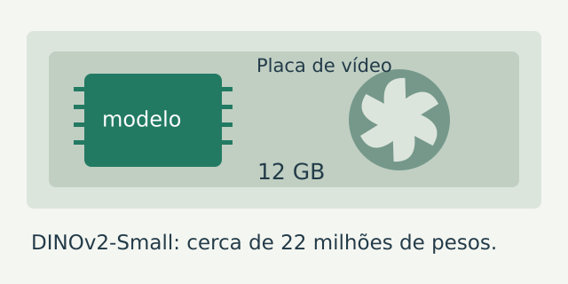
O DINOv2 escolhido vem sem um classificador final para a tarefa da pesquisa. Chamamos essa parte final de cabeça: ela usa os números produzidos pelo corpo para dar uma nota a cada resposta possível.
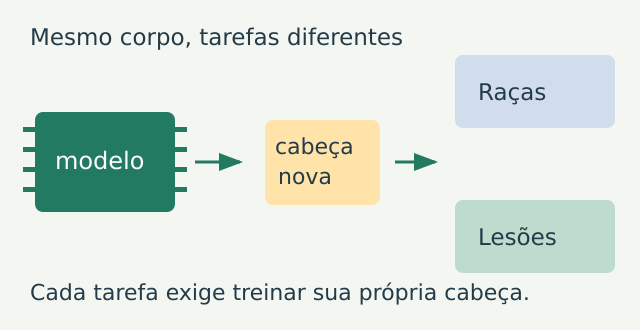
A cabeça não chega sabendo a tarefa: precisa aprender com exemplos. Mais adiante, a pesquisa também ajustará o corpo do modelo.
Nesta sessão, o resultado foi uma decisão de pesquisa. Ainda não houve um novo treino nem uma medida de acerto.
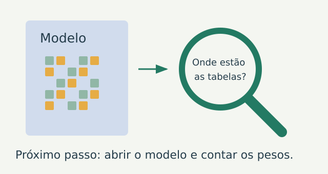
O que aprendemos: o DINOv2-Small já aprendeu padrões visuais, cabe no equipamento disponível e pode receber uma cabeça para a tarefa escolhida.
Sessão 2 do diário original · Lista de leitura da pesquisa.
Os desenhos explicam as ideias de forma simplificada. Esta sessão apresenta os motivos da escolha; o funcionamento interno será aberto nas próximas sessões.
Continuar para a sessão 3: abrir o modelo.
Escolhemos o DINOv2-Small. Agora vamos encontrar suas tabelas e contar os números que elas guardam.
Na sessão anterior, falamos em cerca de 22 milhões de pesos. Mas esse total não diz onde os números estão nem quais tabelas vamos estudar.
O pesquisador precisava fazer um inventário: listar as tabelas, ver seus tamanhos e contar os pesos.
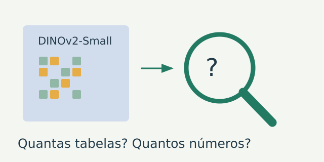
O palpite: os arquivos do modelo informam os tamanhos das tabelas. Com isso, podemos contar seus números.
O pesquisador baixou o modelo e consultou dois arquivos. O config.json é a ficha técnica. O model.safetensors guarda os pesos e uma lista com os nomes e os tamanhos das tabelas.
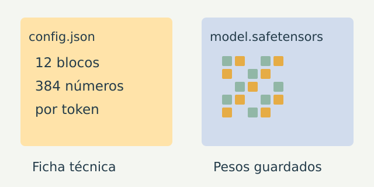
O modelo tem 12 blocos. Cada bloco recebe as listas de números da imagem, faz cálculos e entrega listas atualizadas ao próximo.
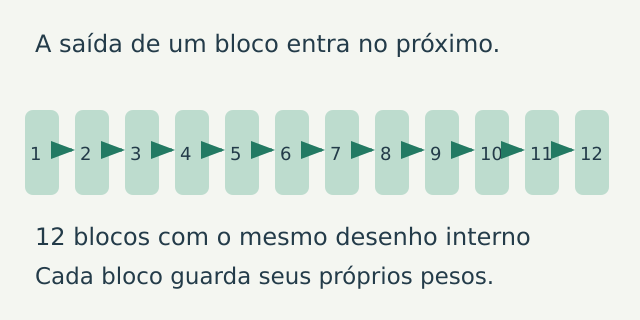
Essas listas são chamadas de tokens. Aqui, cada token tem 384 números. A próxima sessão vai mostrar de onde eles vêm.
Bloco é uma parte da rede. As “camadas da SVD” da sessão 1 são peças de uma decomposição matemática.
Dentro de cada bloco há dois trechos. A atenção relaciona os tokens e usa quatro tabelas grandes. O MLP faz cálculos em cada token separadamente e usa outras duas.
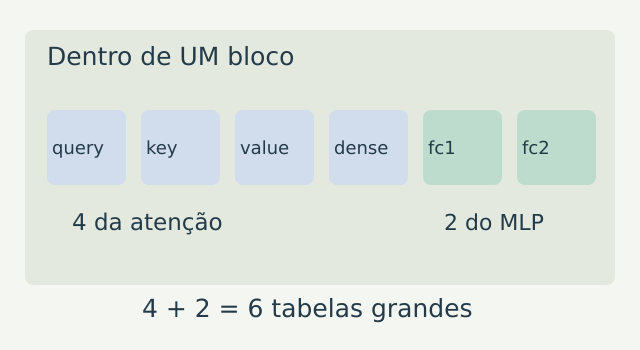
As sessões 5 e 6 vão abrir essas contas. Aqui, queremos localizar e contar as tabelas.
Uma tabela com 384 linhas e 384 colunas guarda 384 × 384 = 147.456 pesos. Cada uma das quatro tabelas da atenção tem esse tamanho.
As duas tabelas do MLP são retangulares: 1536 × 384 e 384 × 1536. Cada uma guarda 589.824 pesos.
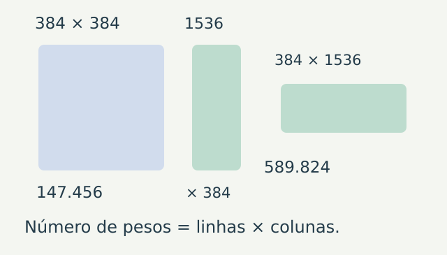
Somando as seis tabelas: 1.769.472 pesos por bloco.
São 12 blocos × 6 tabelas grandes = 72 matrizes. “Matriz” é o nome matemático de uma tabela com linhas e colunas.
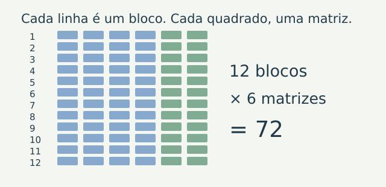
São essas 72 matrizes que o pesquisador escolheu para analisar com a SVD.
O modelo inteiro tem 22.056.576 pesos em 223 conjuntos de números. O diário chama esses conjuntos de tabelas; alguns são listas, outros têm duas ou mais dimensões.
As 72 matrizes escolhidas guardam 21.233.664 pesos: cerca de 96% do total.
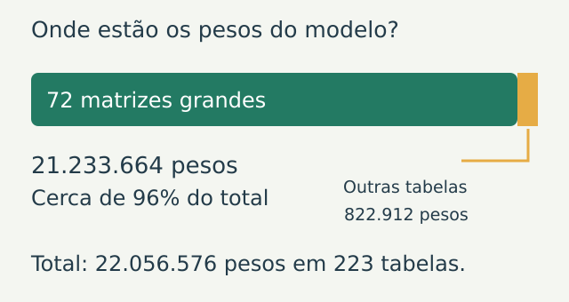
O restante inclui números que ajustam as contas, registram posições e ajudam a transformar a foto em tokens. Ter menos pesos não significa ter pouco efeito.
Nesta sessão, o resultado foi um mapa do modelo. Ainda não medimos aprendizado: localizamos os pesos que serão estudados.
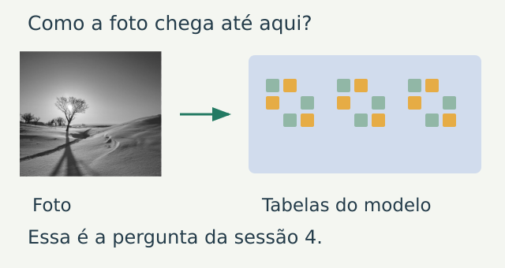
O que aprendemos: as 72 matrizes vêm de 12 blocos com seis matrizes cada. Elas concentram cerca de 96% dos pesos do DINOv2-Small.
Sessão 3 do diário original · Programa que baixa o modelo.
As contagens foram conferidas na ficha técnica e na lista de tamanhos do arquivo de pesos local. Os desenhos simplificam a organização do modelo.
Continuar para a sessão 4: da foto aos tokens.
O modelo trabalha com listas de números. Vamos seguir a transformação da foto até essas listas.
Na sessão 3, encontramos as tabelas do modelo. Elas recebem tokens: listas com 384 números. Mas a foto começa como pixels.
Como passamos dos pixels para os tokens? O pesquisador seguiu uma foto pelo modelo para entender essa tradução.
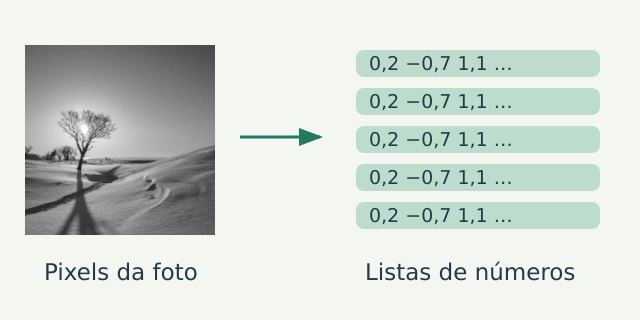
A ideia: acompanhar o tamanho da foto, seus pedaços e as listas produzidas em cada passo.
Neste experimento, a foto é preparada para ficar com 224 × 224 pixels. Depois, o modelo a divide em pedaços de 14 × 14 pixels, chamados patches.
Cabem 224 ÷ 14 = 16 pedaços em cada lado. No total: 16 × 16 = 256 patches.
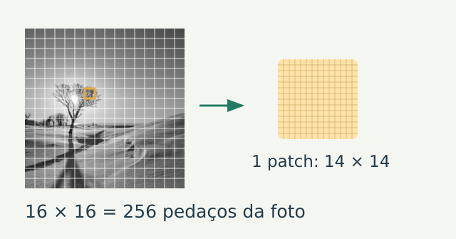
O modelo recebe três valores de cor por pixel: vermelho, verde e azul. Um patch tem 14 × 14 × 3 = 588 valores. Até uma foto cinza é apresentada com esses três canais.
Uma transformação com pesos aprendidos converte esses 588 valores em uma lista de 384 números: o token.
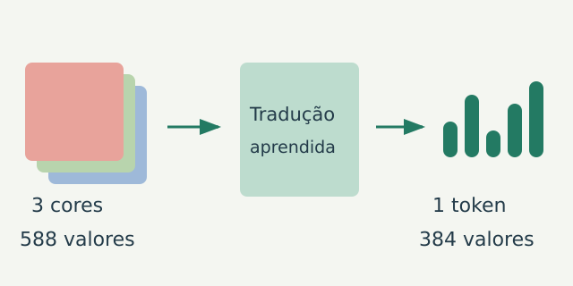
O conteúdo de um patch não informa sozinho em qual lugar da grade ele está. Para registrar isso, o modelo soma uma lista de posição ao token.
São 384 números somados a outros 384, posição por posição. O token continua com 384 números.
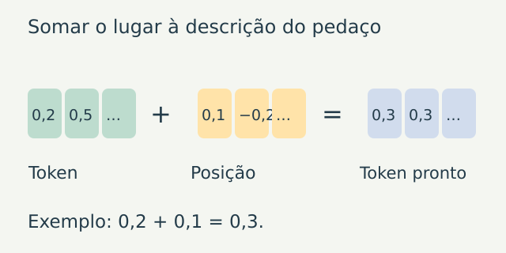
Essas listas vêm de uma tabela de posições, ajustada para a grade de 16 × 16 usada aqui.
Além dos 256 tokens da foto, entra um token extra: o CLS. Ele começa com a mesma lista aprendida para toda foto e não vem de um patch.
Ao passar pelos 12 blocos, essa lista recebe informações da imagem. No final, ela serve de resumo da foto.
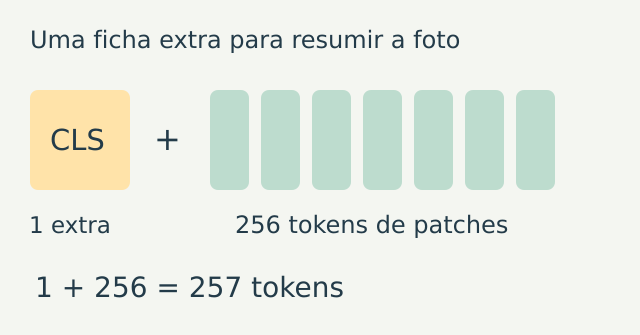
O pesquisador embaralhou os 256 patches em dez ordens diferentes. Os pedaços continuaram iguais; só mudaram de lugar.
Fez a comparação duas vezes: com o modelo normal e com uma cópia cuja tabela de posição foi zerada. Em cada caso, comparou o resumo da foto original com o da foto embaralhada.
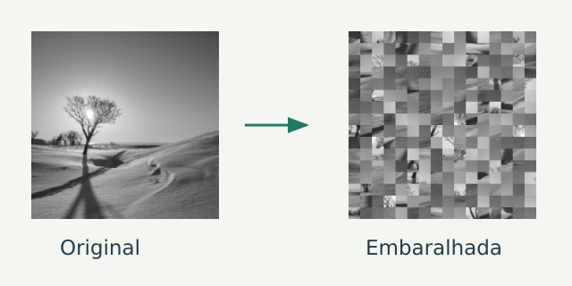
A conta final é 256 tokens de patches + 1 CLS = 257 tokens. Cada um tem 384 números.
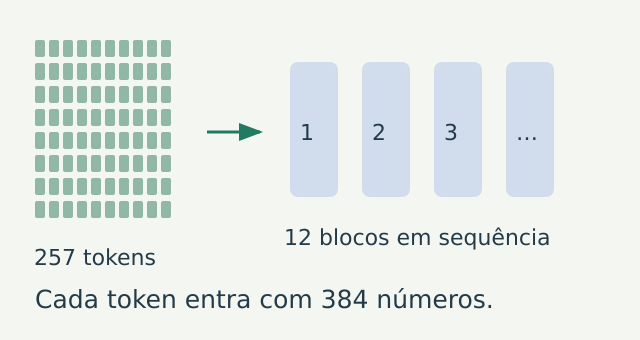
Os tokens são atualizados em cada bloco. A posição da ficha na sequência continua, mas seus números mudam conforme as contas são feitas.
A semelhança foi medida pelo cosseno, que compara a direção de duas listas de números. Valor 1 significa a mesma direção; valores menores indicam uma diferença maior nessa medida.
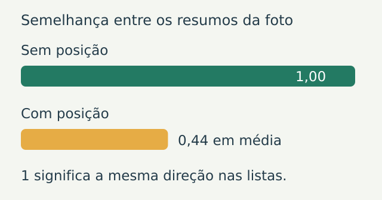
Sem a informação de lugar, trocar os patches de posição praticamente não alterou a direção do resumo. Com ela, a troca passou a fazer diferença.
O valor 0,44 mede semelhança entre resumos. Não significa 44% de acerto numa tarefa.
O que aprendemos: a foto vira 256 tokens, recebe informação de posição e ganha o CLS. Os 257 tokens seguem para os blocos. A próxima pergunta é o que a atenção faz com eles.
Sessão 4 do diário original · Programa do teste · Resultados das dez ordens.
As dimensões foram conferidas nos arquivos do modelo. As listas curtas e os grupos de fichas são desenhos simplificados. A montagem embaralhada ilustra o procedimento; não é uma das dez saídas registradas.
Continuar para a sessão 5: a conta da atenção.
A atenção calcula quanto cada token vai aproveitar das informações dos outros.
Na sessão 4, chegamos a 257 tokens. Agora cada token pode usar informações de outros, inclusive do próprio token.
“Conversar” é uma forma de falar. Na prática, o modelo faz uma conta: decide quanto usar de cada contribuição e mistura os números.
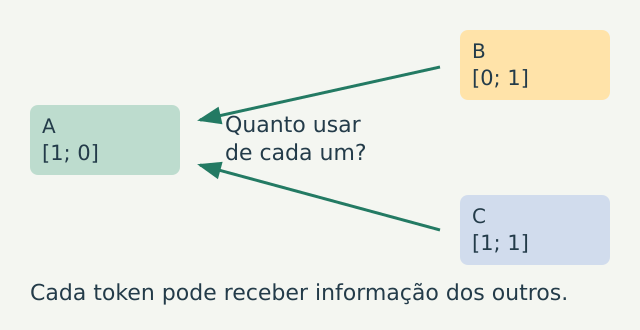
A ideia da sessão: usar listas pequenas para enxergar a conta inteira.
O pesquisador inventou três tokens: A = [1; 0], B = [0; 1] e C = [1; 1]. Cada um tem só dois números.
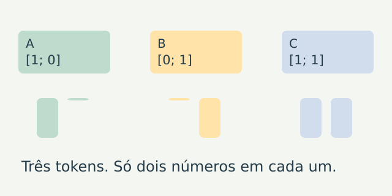
Cada token passa por três tabelas de pesos. Surgem três listas:
Q, a query: usada para procurar relações.
K, a key: usada para ser comparada com as queries.
V, o value: a informação que será misturada.
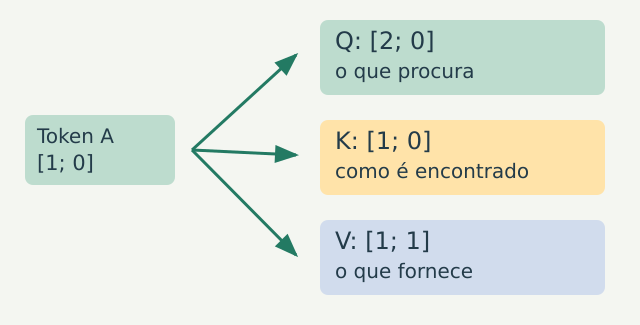
As tabelas deste exemplo foram inventadas. No modelo real, elas foram aprendidas durante o treino e ficam fixas enquanto ele analisa uma foto.
Vamos acompanhar A. Sua query é [2; 0]. Ela é comparada com a key de cada token: multiplicamos os números da mesma posição e somamos.
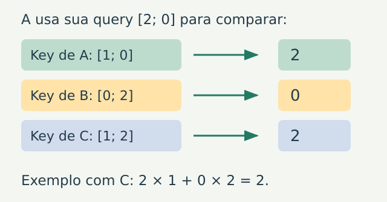
A compara com todos, inclusive consigo mesmo. Não há uma escolha antecipada de quais tokens consultar.
Uma conta chamada softmax transforma as notas em números positivos que somam 100%. Notas maiores recebem mais participação.
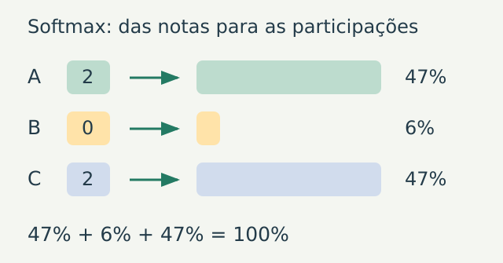
Essas são as porcentagens de atenção. Elas são calculadas para a entrada atual. São diferentes dos pesos guardados nas tabelas do modelo.
Agora usamos as porcentagens para misturar os values. Para A, entram aproximadamente 47% do value de A, 6% do de B e 47% do de C.
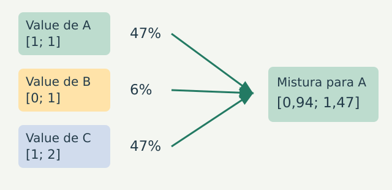
No primeiro número: 0,47 × 1 + 0,06 × 0 + 0,47 × 1 ≈ 0,94. No segundo: 0,47 × 1 + 0,06 × 1 + 0,47 × 2 ≈ 1,47.
Repetindo a conta para B e C, encontramos três listas novas. Cada uma usa as participações calculadas pela sua própria query.
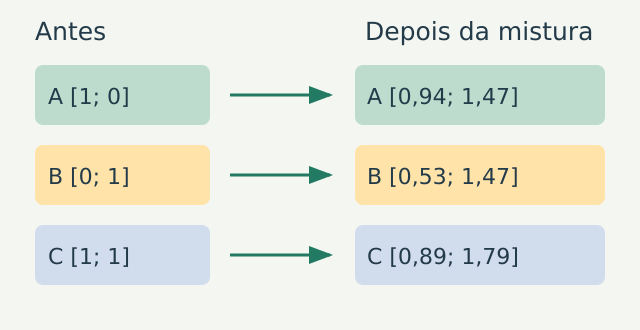
No DINOv2-Small, Q, K e V têm 384 números por token. Cada lista é dividida em seis fatias de 64 números. Cada grupo faz sua própria conta de atenção.
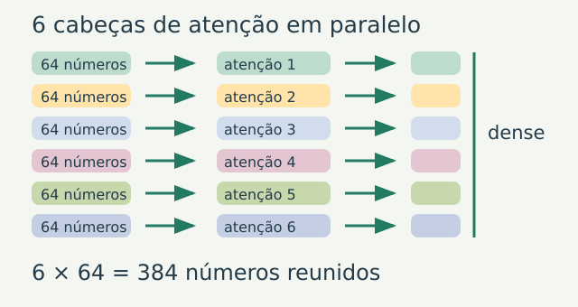
Os resultados são reunidos e passam por uma quarta tabela, a dense, que combina suas informações.
No modelo real, as notas também são divididas por 8 antes do softmax e há números adicionais somados nas transformações. O exemplo pequeno deixa esses detalhes de fora.
No bloco real, a contribuição da atenção, depois da dense, é somada ao token que já existia. Essa soma ajuda a manter informações anteriores enquanto acrescenta as novas.
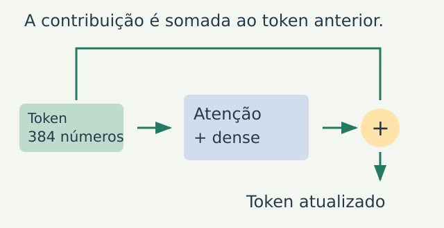
Continuam sendo 257 tokens de 384 números. O que muda é o conteúdo das listas.
O que aprendemos: Q e K calculam as participações; essas participações misturam os V. Depois dessa troca, o MLP vai trabalhar em cada token separadamente.
Sessão 5 do diário original · Programa das contas · Valores do exemplo.
Os desenhos usam o exemplo didático de três tokens. O trecho sobre seis cabeças e a soma residual explica como a ideia aparece no modelo real.
Continuar para a sessão 6: como o MLP reescreve cada token.
Depois da troca de informações pela atenção, o MLP transforma cada token separadamente.
O MLP é a segunda parte de cada bloco. Ele recebe um token com 384 números, aumenta a lista para 1536 e depois volta para 384.
Para que fazer esse caminho? O pesquisador usou exemplos pequenos para entender as duas transformações e o ajuste entre elas.
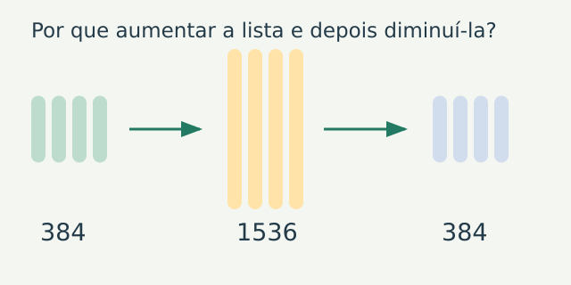
A primeira tabela, fc1, transforma 384 números em 1536. Depois, uma função chamada GELU ajusta cada valor. A segunda tabela, fc2, combina os resultados e produz 384 números.
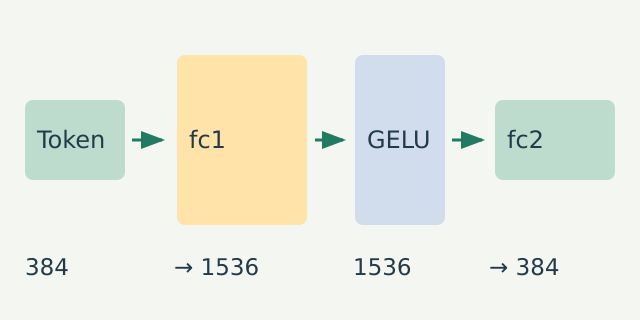
Imagine que cada linha da fc1 faz uma pergunta: quanto esta lista combina com este padrão? A conta multiplica os números da mesma posição e soma.
No exemplo, o token é [1; 2]. Quatro padrões produzem as respostas 1, 2, 3 e −1.
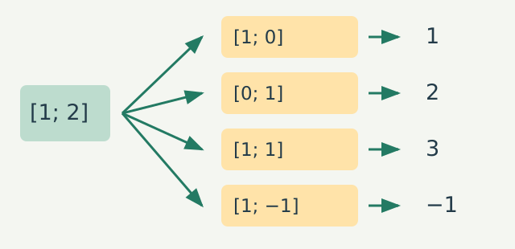
“Perguntas” é uma analogia. Os padrões são listas de números aprendidas durante o treino.
Para facilitar as contas, o exemplo usa uma regra simples: se o valor é negativo, troque por zero. Essa regra se chama ReLU.
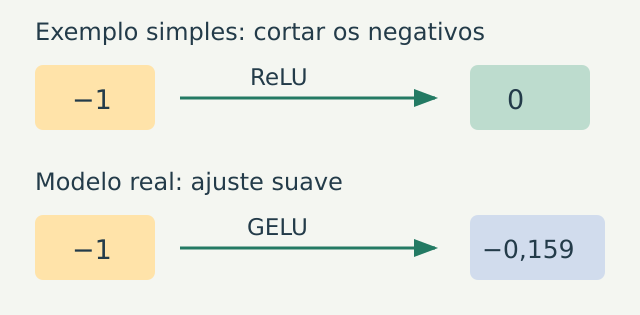
As duas funções mudam a resposta de um jeito que uma multiplicação por tabela, sozinha, não faz.
Depois do corte simples, a lista [1; 2; 3; −1] vira [1; 2; 3; 0].
A fc2 do exemplo soma o primeiro valor com o terceiro, e o primeiro com o quarto. Assim, produz a alteração [4; 1].
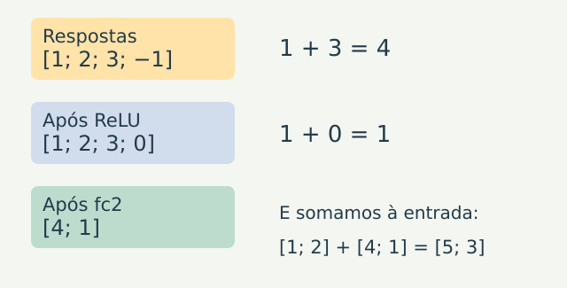
Cada resposta pode contribuir com uma alteração diferente. É como reconhecer um padrão e aplicar uma correção associada a ele.
Esses resultados são do exemplo com ReLU, sem os ajustes extras do bloco real. Com GELU, os valores seriam diferentes.
Sem esse ajuste, duas multiplicações por tabelas podem ser reunidas numa só. Aumentar e diminuir a lista, por si só, não cria esse novo tipo de transformação.
Veja uma tarefa simples: fazer 3 e −3 virarem 3, o valor sem sinal. Expandimos cada entrada para [x; −x], zeramos os negativos e somamos.
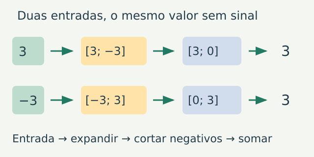
Uma simples multiplicação por um número fixo não consegue fazer isso: multiplicar por 1 mantém o −3 negativo; multiplicar por −1 torna o 3 negativo.
O MLP usa as mesmas tabelas para todos os tokens daquele bloco. Mas processa cada lista separadamente: nesta etapa, não busca os números dos outros tokens.
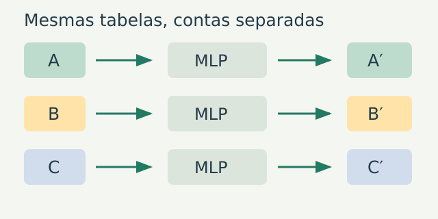
O token já traz informações recebidas na atenção. Trabalhar sozinho agora não apaga essa troca anterior.
A fc1 e a fc2 têm 589.824 pesos cada. Juntas, guardam 1.179.648 pesos: dois terços dos pesos das seis matrizes grandes de um bloco.
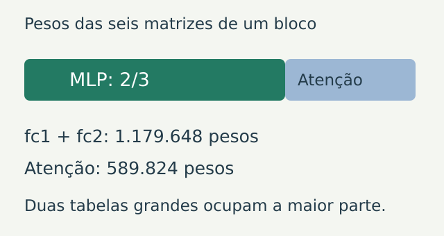
A atenção mistura informações entre tokens. Depois, o MLP transforma cada token separadamente e sua contribuição é somada à lista que já existia.
O que aprendemos: a fc1 testa padrões, a função do meio ajusta as respostas e a fc2 combina as alterações. Nesta sessão, o resultado é entender essas contas; não houve um novo treino.
Sessão 6 do diário original · Programa que confere as contas e desenha os exemplos originais.
O exemplo numérico do diário usa o corte de negativos da ReLU. Esta aula distingue essa simplificação da GELU indicada na ficha técnica do modelo. Os desenhos omitem normalizações e outros ajustes para mostrar o caminho principal.
Continuar para a sessão 7: as fotos do experimento.
Já entendemos o modelo. Agora precisamos de uma tarefa com exemplos e respostas certas para treiná-lo.
A tarefa escolhida foi identificar a raça de cães e gatos numa foto. O conjunto se chama Oxford-IIIT Pet e oferece 37 respostas possíveis.
O palpite: começar com uma tarefa próxima do que o modelo já conhece pode servir de referência para os próximos testes. Ainda precisamos medir se ela é fácil para ele.
O pesquisador baixou uma cópia do conjunto no HuggingFace e examinou os arquivos. Cada registro guarda a imagem, o número da raça, o nome do arquivo original e a indicação de gato ou cão.
O número da resposta é o rótulo. Por exemplo, 4 significa beagle. Os números vão de 0 a 36; os nomes correspondentes ficam no índice do arquivo.
O conjunto já vem dividido: 3.680 fotos para aprender e 3.669 para conferir o resultado.
Durante o treino, o modelo pode usar as respostas do primeiro grupo para ajustar os pesos. As fotos de teste ficam fora desse ajuste.
É como estudar com uma lista de exercícios e depois fazer uma prova com outros exemplos.
Se uma raça tivesse muito mais fotos que as outras, o resultado poderia esconder essa diferença. Por isso, o pesquisador contou as imagens de cada raça.
As quantidades são próximas, mas não exatamente iguais. O conjunto é bastante equilibrado entre as 37 raças.
O mesmo rótulo pode acompanhar fotos muito diferentes. Mudam a pose do animal, a iluminação, o fundo e a distância da câmera.
O desafio é reconhecer a raça apesar dessas mudanças, em vez de depender de um fundo ou de uma posição específica.
As fotos originais têm tamanhos variados. A largura vai de 114 a 3.264 pixels; a altura, de 103 a 2.606. Nenhuma já está em 224 × 224.
No treino, o programa varia o recorte e pode espelhar a foto. No teste, usa um recorte central fixo. Nos dois casos, a imagem chega com 224 × 224 pixels.
O levantamento encontrou 7.349 fotos de 37 raças: 12 raças de gato e 25 de cão.
O resultado desta sessão é conhecer os dados: o significado dos rótulos, as quantidades, a separação dos grupos e a variedade das imagens.
Quem escolhe uma das 37 raças ao acaso, com chances iguais, acerta em média 1 ÷ 37 ≈ 2,7% das vezes.
Para avaliar o modelo, vamos medir a acurácia: número de respostas certas dividido pelo total de fotos, vezes 100.
O que aprendemos: temos fotos com respostas conhecidas e grupos separados para aprender e avaliar. Na próxima sessão, vamos ver como uma resposta errada faz a cabeça do modelo aprender.
Sessão 7 do diário original · Programa que explora os dados · Resumo das contagens · Números e nomes das raças.
As fotografias desta aula vêm dos arquivos locais do conjunto. Os desenhos de opções e grupos são representações didáticas.
Continuar para a sessão 8: como a cabeça aprende.
A cabeça recebe o resumo da foto, dá notas às raças e aprende ao comparar sua resposta com o rótulo certo.
O DINOv2 já veio treinado para produzir informações sobre imagens. Mas a cabeça nova, que dá uma nota a cada raça, começa com pesos aleatórios.
O pesquisador quis testar: é possível reconhecer as raças treinando apenas essa parte final?
No exemplo, a foto pertence à classe A e seu resumo CLS é [1; 2]. A cabeça tem uma linha para A e outra para B.
Cada linha é multiplicada pelo CLS: multiplicamos os números da mesma posição e somamos. Assim surgem as notas.
As duas classes e os números são inventados para a conta caber no papel.
O softmax transforma as notas em probabilidades que somam 100%. Antes de aprender, a cabeça dá 37,75% para A e 62,25% para B.
Uma conta chamada perda mede o erro para orientar o treino. Neste exemplo, ela vale 0,974. Quanto menor a probabilidade da resposta certa, maior essa perda.
O gradiente indica como cada peso afeta a perda. Para calcular o ajuste deste exemplo, subtraímos o alvo da probabilidade:
Para A: 0,3775 − 1 = −0,6225.
Para B: 0,6225 − 0 = +0,6225.
Depois multiplicamos cada resultado pelo CLS [1; 2]. Isso dá um gradiente para cada peso das duas linhas.
O passo de aprendizado controla o tamanho do ajuste. Aqui usamos 0,1 e aplicamos a regra: novo = antigo − 0,1 × gradiente.
Com a cabeça atualizada, a probabilidade de A sobe para 53,06%. Agora ela fica acima de B. O corpo e o CLS permaneceram iguais.
A cabeça real recebe 384 números e produz 37 notas. Ela tem 14.208 pesos e 37 ajustes adicionais, chamados bias: 14.245 números ao todo.
O programa junta 32 fotos por lote e calcula um ajuste usando a média dos erros. Uma época é uma passada pelas 3.680 fotos de treino.
O treino real usa AdamW, que adapta os ajustes, começando com passo 0,001. Também suaviza o alvo da resposta certa para cerca de 90% e aplica um leve encolhimento dos pesos.
O pesquisador repetiu o treino dez vezes. Cada repetição usou uma semente diferente, isto é, um número que controla os sorteios, como os pesos iniciais e a ordem das fotos.
Na conta de duas classes, a perda caiu depois de cada um dos dois ajustes acompanhados.
Esses números são a perda do exemplo. Eles não são porcentagens de acerto no conjunto de fotos.
Nas fotos de teste, a média dos dez treinos subiu de 3,18% antes de aprender para 91,83% após uma época e 93,82% após cinco.
Ao final, os dez resultados ficaram entre 93,40% e 94,33%. A variação mostra por que vale repetir o treino, em vez de confiar em uma única execução.
O pesquisador comparou os números do corpo treinado com os do original. Nenhum dos 223 conjuntos de números do corpo mudou, nos dez treinos.
O que aprendemos: o corpo já produzia um resumo útil para distinguir as raças. A cabeça aprendeu a usar esse resumo. Na próxima sessão, veremos como o erro também pode orientar mudanças no corpo.
Sessão 8 do diário original · Programa das contas de gradiente · Valores do exemplo · Resultados dos dez treinos.
O exemplo usa duas classes e um passo simples de descida do gradiente, sem bias nem suavização dos alvos. O treino real usa 37 classes e as configurações descritas acima. A aula distingue as notas das probabilidades e a perda da porcentagem de acertos.
Continuar para a sessão 9: como o corpo aprende.
O erro pode orientar ajustes nas tabelas que produzem o resumo da foto, além dos ajustes na cabeça.
Na sessão 8, só a cabeça aprendeu. Mas a tese quer estudar as mudanças nas matrizes do corpo.
Precisamos entender como uma resposta errada indica ajustes em tabelas que fizeram cálculos muito antes da resposta final.
No exemplo, uma única matriz W faz o papel do corpo. Ela transforma a entrada [1; 1] no CLS [1; 2].
A cabeça é a mesma do exemplo da sessão 8 e fica parada. A resposta certa continua sendo A. Desta vez, vamos ajustar W.
Já sabemos os sinais nas notas: [−0,6225; +0,6225]. Para saber como cada número do CLS afeta o erro, esses sinais passam de volta pela cabeça.
Neste caso, aumentar o primeiro número do CLS favorece A. Diminuir o segundo reduz a nota de B.
O gradiente de cada número do CLS é multiplicado por cada número da entrada [1; 1]. Isso monta uma tabela com o mesmo tamanho de W.
Esse cálculo de trás para frente é a retropropagação. Ele acompanha como cada cálculo anterior influenciou o resultado final.
Usamos a regra da sessão anterior: novo = antigo − passo × gradiente. O passo do exemplo é 0,1.
O gradiente feito à mão coincidiu com o cálculo automático. No modelo real, o mesmo princípio se aplica aos cálculos dos 12 blocos.
No plano do experimento, o treino tem cinco épocas. Na primeira época, só a cabeça muda. Nas outras quatro, cabeça e corpo podem mudar juntos.
Esse começo é o aquecimento. Ele dá tempo para a cabeça deixar de responder quase ao acaso antes de orientar mudanças no corpo já treinado.
Congelar desliga o cálculo dos gradientes dos pesos do corpo. Nesta configuração, o AdamW pula esses pesos: nem o encolhimento chamado weight decay é aplicado a eles.
O passo inicial da cabeça é 0,001. O do corpo é 0,00001, cem vezes menor. O objetivo é adaptar o corpo com mais cuidado.
A redução segue uma curva de cosseno. Quando o corpo é liberado, no passo 116, seu passo já está em cerca de 0,000009.
O otimizador continua o mesmo e a curva não recomeça. Ele ainda não tem histórico de ajustes do corpo, porque esses pesos estavam congelados.
Para conferir o procedimento, um teste executou a primeira época inteira e dez passos da segunda. Ele não executou as cinco épocas completas.
Após a época congelada, nenhum dos 223 conjuntos de números do corpo havia mudado. A cabeça, por sua vez, tinha mudado.
Já no primeiro passo após a liberação, 222 dos 223 conjuntos mudaram. O único que ficou igual foi o mask_token, que não participa desta tarefa de classificação sem esconder pedaços da foto.
Após dez passos com o corpo liberado, a mudança mediana das 72 matrizes era de 0,17%, com máximo de 0,26%.
Essas porcentagens medem o tamanho da alteração das matrizes. Não são porcentagens de melhora no acerto.
Chamamos a matriz original de W0 e sua versão depois do treino de W1. Comparar esse par é o ponto central da pesquisa.
O que aprendemos: a retropropagação calcula os gradientes até o corpo. O congelamento controla quando seus pesos podem mudar. Agora podemos treinar e usar a SVD para investigar o que mudou.
Sessão 9 do diário original · Programa do exemplo de gradiente · Valores do exemplo · Teste de congelar e liberar · Resultados da checagem.
A matriz de duas linhas é um exemplo didático, com cabeça fixa e passo simples. A checagem do DINOv2 usou AdamW e uma execução parcial de 125 passos. O plano completo de treino tem 575 passos.
Continuar para a sessão 10: os primeiros resultados.
Agora temos o modelo antes e depois do ajuste. Vamos comparar suas 72 matrizes com a SVD.
Na sessão 1, vimos que cada peça da SVD tem uma intensidade σ e um padrão formado por direções.
Depois de treinar o DINOv2 nas raças, o pesquisador quis medir: o que mudou nessas peças?
A hipótese inicial: as direções mudariam mais que os σ. Esta sessão mostra as primeiras medidas; as próximas vão testar se essa comparação é válida.
Uma tentativa anterior liberou o corpo desde o começo e usou passo 0,00005 nele. Após cinco épocas, acertou apenas 17,72% das fotos de teste.
O protocolo corrigido usou uma época só com a cabeça, seguida de quatro com cabeça e corpo, e passo inicial de 0,00001 no corpo.
Cada treino começou do mesmo DINOv2 original. Foram usadas dez sementes, de 0 a 9, mudando os sorteios do treino.
Todos usaram weight decay de 0,05: o ajuste do otimizador que encolhe levemente os pesos durante o treino.
Para cada uma das 72 matrizes, o programa comparou W0, antes do treino, e W1, depois. Mediu o deslocamento da matriz inteira e fez a SVD das duas versões.
Para os σ, mede a mudança em relação ao valor inicial. Para as direções, mede o giro entre as setas antes e depois.
A SVD pode inverter o sinal de um par de vetores sem alterar a peça. A comparação ignora essa inversão para não contá-la como um giro real do padrão.
Dois treinos da mesma tarefa podem alterar os pesos de formas diferentes. Por isso, o pesquisador comparou as mudanças de cada treino com as dos outros.
O objetivo era procurar o que se repete, apesar dos sorteios diferentes, e o que varia de uma execução para outra.
O acerto médio dos dez treinos foi 94,15%, variando de 93,79% a 94,66%.
Liberar o corpo acrescentou 0,33 ponto percentual nesta comparação. Isso ainda não responde se mudar o corpo é necessário para essa tarefa.
Em média, o tamanho da diferença entre W1 e W0 foi de 0,52% do tamanho de W0.
Isso não significa que só 0,52% dos pesos mudaram. Muitos pesos podem mudar, cada um um pouquinho.
Os dez maiores σ mudaram, em média, 0,019%. O giro das direções foi cerca de 0,95 grau, convertido pela análise em mudança relativa de aproximadamente 1,66%.
Essa foi uma leitura inicial, depois revista. Um σ é um número; uma direção é uma lista com centenas de números. A régua pode produzir uma diferença grande mesmo sem aprendizado.
Na sessão 12, controles com ruído mostrarão que essa razão, sozinha, não distingue aprendizado de variação aleatória.
O pesquisador mediu a semelhança entre as mudanças usando o cosseno. Para as medidas desta etapa, encontrou cerca de 0,53 nos σ e 0,32 nas direções.
As repetições não alteraram o modelo de formas totalmente iguais. Mas comparar diretamente os dois canais ainda depende da régua usada, que será revista adiante.
Parte da mudança dos σ parecia um encolhimento em conjunto. Essa parte comum respondeu por cerca de 24% da energia da mudança dos dez maiores σ.
A escala média foi de −0,0092%, próxima dos −0,0088% previstos pelo encolhimento do otimizador.
A próxima pergunta: essa parte da mudança veio do aprendizado ou do weight decay? A sessão 11 vai repetir o experimento desligando esse encolhimento.
Sessão 10 do diário original · Resumo dos dez treinos · Medidas das matrizes · Decomposição da mudança dos σ · Programa das comparações.
Os desenhos simplificam as medidas. A aula preserva a sequência da pesquisa, mas identifica como provisória a interpretação do “87 vezes”, revista pelos controles da sessão 12.
Continuar para a sessão 11: o treino sem weight decay.
Parte da mudança dos σ parecia vir do weight decay. O pesquisador repetiu o treino para conferir.
Durante o treino, os pesos recebem ajustes para reduzir o erro. Mas o weight decay também os encolhe um pouco a cada passo, independentemente de qual raça aparece na foto.
A pergunta: se desligarmos o weight decay, o encolhimento dos σ desaparece?
O pesquisador repetiu os dez treinos, com as mesmas fotos, sementes, épocas e passos de aprendizado. A mudança foi passar o weight decay de 0,05 para zero.
Imagine três σ com mudanças de −2%, −4% e 0%. A média é −2%. Podemos separar essa média do restante de cada mudança.
A parte comum descreve uma escala compartilhada. O restante mostra quanto cada σ se afastou dessa média. O programa fez isso com os dez maiores σ de cada matriz.
Além dos dez treinos, a semente 0 foi executada novamente. A pergunta era: com os mesmos sorteios, os pesos finais ficam exatamente iguais?
O pesquisador também manteve o corpo original parado, guardou o resumo CLS de cada foto e treinou um classificador simples sobre esses resumos.
Esse diagnóstico pergunta: os resumos já contêm informação suficiente para reconhecer as raças, sem mudar o corpo?
A média com sinal da parte comum passou de −0,0092% para aproximadamente −0,0002%. Isso sustenta a hipótese de que o weight decay explicava boa parte da tendência média de encolher.
A parte comum ainda existia: sua participação na energia da mudança caiu de 24,3% para 12,1%. Uma média próxima de zero não significa que todos os σ ficaram parados.
A parte em que cada σ se afasta da média ficou em cerca de 0,0166%, com e sem weight decay.
A mudança total dos σ caiu de cerca de 0,0191% para 0,0173%. A medida das direções ficou próxima: 1,66% e 1,64%.
A razão entre direções e σ passou para cerca de 95. Como na sessão 10, essa régua inicial não permite concluir qual parte aprendeu mais.
Imagine que dois treinos encolham os σ do mesmo jeito. Só isso já faz parte das mudanças parecer igual, mesmo que os outros ajustes sejam diferentes.
Sem weight decay, a semelhança entre as mudanças dos σ caiu de 0,53 para 0,45 na régua usada. Isso ajuda a entender por que parte da concordância anterior podia vir do encolhimento comum.
Esses números medem alinhamento entre mudanças. Não significam 53% ou 45% de pesos iguais.
O ajuste completo acertou 94,15% com weight decay e 94,13% sem ele. A diferença foi de apenas 0,02 ponto percentual.
O corpo original com regressão logística chegou a 94,79%. Portanto, neste protocolo e neste conjunto, o ajuste do corpo não superou esse diagnóstico.
O classificador final aprendeu nos três casos. O que ficou parado no diagnóstico foi o corpo.
As duas execuções da semente 0 acertaram 94,17%. Mesmo assim, apenas 1 dos 223 conjuntos de números do corpo ficou exatamente igual.
A distância entre as duas versões ficou em cerca de 20% do tamanho da mudança causada pelo treino. Isso não significa que 20% dos pesos mudaram.
Neste ambiente de execução, controlar os sorteios não garantiu que todas as contas produzissem números finais idênticos.
O que aprendemos: parte do encolhimento vinha do otimizador. As demais mudanças permaneceram, mas ainda precisamos de uma tarefa em que mudar o corpo realmente ajude.
Sessão 11 do diário original · Resumo dos dez treinos · Mudanças dos σ sem weight decay · Comparação da mesma semente · Diagnóstico do corpo congelado.
O exemplo de três σ e as setas são ilustrações. Os resultados numéricos vêm dos registros do experimento. A parte comum é calculada por matriz; os valores apresentados resumem matrizes e repetições.
Continuar para a sessão 12: conferir a tarefa e as medidas.
O modelo mudou. Mas a mudança ajudou na tarefa? E a régua usada para medi-la é justa?
Em pets, ajustar o corpo não superou o classificador com corpo congelado. Então, medir uma mudança nos pesos não demonstrava que ela tinha sido útil.
Havia outra dúvida: um σ é um número; uma direção é uma lista com centenas de números. A própria conta poderia fazer as direções parecerem mudar mais.
O plano: conferir as medidas e procurar uma tarefa em que ajustar o modelo melhore o resultado.
O pesquisador somou números aleatórios às matrizes, sem treinar nada. Esse ruído mudou os pesos, mas não recebeu fotos nem respostas certas para aprender a tarefa.
Portanto, o “87 vezes” das sessões anteriores não prova que as direções aprenderam mais. A régua responde à geometria da mudança, mesmo quando ela foi sorteada.
Imagine duas setas desenhadas sobre uma mesa. Você pode girar as setas sem inclinar o tampo. Olhar só as setas faria parecer que tudo mudou, embora o plano continue igual.
Quando σ vizinhos são muito parecidos, suas direções individuais podem girar bastante. A régua nova passou a olhar o conjunto das direções, e não só cada seta separada.
Na revisão de um modelo de pets, o giro caiu de cerca de 0,97 grau para 0,38 grau ao trocar a medida individual pela do conjunto.
Foram examinados quatro conjuntos: lesões de pele, texturas, letras japonesas e imagens de satélite. Em cada um, o corpo ficou congelado e só um classificador simples aprendeu a ler os resumos CLS.
Cada candidato usou 3.680 imagens de treino, sorteadas de forma fixa. Os conjuntos têm quantidades diferentes de classes, por isso também foram registradas as referências de acerto ao acaso.
Um acerto baixo com o corpo congelado não garante que ajustá-lo vai ajudar. Por isso, o pesquisador fez um piloto em pele, letras e texturas, usando uma semente.
Pele teve o maior ganho: de 56,58% para 72,46%. Foi o conjunto escolhido para os testes seguintes.
O conjunto escolhido tem oito classes. Foram usadas 3.680 imagens no treino e 2.840 no teste. Duas classes têm menos exemplos que as demais.
A ficha do conjunto não explica bem a origem das imagens. A inspeção também encontrou duas cópias exatas entre os arquivos originais de treino e teste, além de imagens parecidas.
Isso limita a leitura do resultado. O conjunto serve aqui para testar o método de adaptação; estes números não demonstram desempenho para uso médico.
Foram feitos dez treinos com os rótulos certos e dez com os rótulos de treino embaralhados. As imagens e o procedimento continuaram os mesmos.
No grupo trocado, o modelo pode decorar algumas associações falsas. Mas elas não oferecem a relação correta para reconhecer as classes no teste.
Para cada mudança real de uma matriz, o programa sorteou um ruído com o mesmo tamanho total. Depois aplicou as mesmas medidas às duas versões.
Assim, perguntamos: a mudança dos σ supera o que o acaso faria nos σ? E fazemos a mesma pergunta para o conjunto das direções.
O programa também passou a medir todos os σ e conjuntos de 10, 50 e 100 direções.
O pesquisador pegou um modelo já treinado e trocou apenas suas 72 matrizes. A cabeça e os outros parâmetros continuaram como estavam depois do treino.
A mudança foi separada em duas partes: uma que reforça ou enfraquece os padrões originais da SVD, chamada aqui de parte σ, e o restante da mudança.
Foram testadas versões com nenhuma mudança nas 72 matrizes, só a parte σ, só o resto e a mudança completa.
A separação é muito desigual. Numa matriz de 384 × 384, há 147.456 números. A parte σ só permite ajustar 384 combinações independentes: é uma fatia pequena das possibilidades.
Para conferir se o problema era só o tamanho da fatia, o pesquisador sorteou outra fatia com a mesma quantidade de possibilidades. Também igualou sua energia à da parte σ.
A pergunta ficou mais justa: a parte σ faz algo diferente de uma fatia aleatória desse tamanho?
Os dez treinos reais chegaram a 72,84% de acerto médio, contra 56,58% no diagnóstico com corpo congelado. O ganho foi de cerca de 16,3 pontos.
Agora há um ganho importante a investigar. As respostas corretas fizeram diferença no que o modelo conseguiu reconhecer no teste.
Os dez maiores σ superaram sua referência de ruído em cerca de 2,13 vezes nos treinos reais. O conjunto das dez direções superou sua referência em cerca de 1,42 vez.
Portanto, superar esse ruído mostra uma estrutura deixada pelo treino, mas não identifica sozinho a estrutura útil para a tarefa.
Com 50 e 100 direções, as medidas ficaram próximas da referência de ruído. A mudança total também foi parecida em pets e pele: cerca de 0,52% e 0,54%, apesar dos ganhos diferentes no acerto.
O pesquisador comparou as mudanças de dois treinos. A pergunta foi: eles ajustaram o modelo de maneira parecida?
Dois treinos com respostas certas compartilharam mais o caminho da mudança do que um treino real e um trocado. Isso fornece evidência de um sinal da tarefa nas mudanças.
A concordância ainda é parcial. Os sorteios de cada treino também deixam suas marcas no resultado.
Ao devolver só a parte σ do treino pronto, o acerto quase não subiu. Mas a fatia aleatória com energia igual também quase não ajudou.
O resto recuperou quase todo o acerto, mas também guardava 99,74% da energia da mudança. Recuperar quase tudo usando quase toda a mudança não demonstra que “o aprendizado mora nas direções”.
Quando o resto foi encolhido até a energia da parte σ, chegou a 50,22%. É uma diferença, mas a rede não responde de forma proporcional ao tamanho do ajuste.
O teste mostra o que o treino livre deixou em cada parte. Ele não mostra o que a parte σ conseguiria aprender se fosse obrigada a trabalhar sozinha.
Agora podemos perguntar: e se, desde o começo, só os σ puderem mudar nas 72 matrizes? E se só determinadas mudanças de direção forem permitidas?
Esta etapa ainda tem limites: um único domínio escolhido por pilotos de uma semente, dados com origem pouco documentada e uma única troca de rótulos compartilhada pelos controles.
O que aprendemos: calibrar a régua evita confundir movimento com aprendizado. Os controles encontram sinal da tarefa, mas o transplante não decide qual parte teria maior capacidade de aprender. A sessão 13 vai testar isso diretamente.
Sessão 12 do diário original · Triagem dos candidatos · Inspeção dos dados · Medidas dos treinos reais · Medidas dos controles · Resultados dos transplantes · Controle da fatia aleatória · Alinhamento entre treinos.
Os planos, fichas, fatias e grades são representações didáticas. A parte chamada σ no transplante é uma projeção da mudança sobre os padrões da SVD original; o resto não é uma separação pura de todas as mudanças de direção.
Continuar para a sessão 13: treinar só uma parte.
Em vez de separar a mudança depois do treino, vamos limitar desde o começo o que as 72 matrizes podem mudar.
Na sessão 12, guardar só a parte σ de um treino pronto quase não recuperou o acerto. Isso não demonstrava que os σ eram incapazes de aprender.
O pesquisador esperava que só os σ aprendessem pouco e que só as rotações aprendessem quase tudo. Vamos testar essa hipótese.
Atenção ao “só”: a restrição vale para as 72 matrizes. A cabeça e os outros parâmetros do corpo continuam treinando em todas as variantes.
Na primeira variante, as 72 matrizes ficam iguais às originais. A cabeça, os ajustes de escala, os bias e as tabelas de entrada continuam aprendendo.
Ela não é o corpo inteiro congelado da triagem. Também não é o transplante da sessão 12: os outros parâmetros aprendem já convivendo com as 72 matrizes fixas.
Na segunda variante, os padrões originais da SVD ficam parados. Cada σ recebe um ajuste próprio, chamado δ, ou delta.
A conta é σ novo = σ original × (1 + δ). Se σ era 10 e δ vira 0,1, ele passa a 11. Se δ vira −0,1, passa a 9.
Os ajustes começam em zero, preservando o ponto de partida. Durante o treino, o gradiente passa a ajustar esses números.
Na terceira variante, o programa aplica uma transformação que gira sem esticar. Assim, os σ são preservados.
As linhas de grupos diferentes não se misturam. Portanto, esta é uma família limitada de mudanças de direção, não toda mudança possível.
Os ajustes δ e as rotações precisam de seus próprios passos de aprendizado. O pesquisador reservou 368 fotos, 10% do treino, para validação e comparou alguns passos em pilotos.
Foram escolhidos 0,01 para só σ e 0,0001 para só rotação. Esses passos se aplicam aos novos ajustes, não a todos os pesos do corpo.
Uma primeira fórmula para construir a rotação falhou por falta de memória. Ela foi substituída por outra, e os pilotos foram refeitos. A validação ainda usava recortes aleatórios, o que acrescentava oscilação às medidas.
Foram feitos dez treinos de cada variante restrita. A quarta variante, completa, reaproveitou os dez modelos treinados livremente na sessão 12.
Nos treinos finais, todos usaram as mesmas imagens de pele, cinco épocas, lotes de 32 e weight decay zero. A primeira época continuou sendo só da cabeça.
O acerto médio foi 60,31% com as 72 congeladas, 70,30% só σ, 71,26% só rotação e 72,84% no treino completo.
A hipótese de que os σ aprenderiam pouco não se confirmou. A rotação ficou acima deles em nove das dez sementes, com vantagem média de 0,96 ponto percentual.
O ponto de partida desta comparação é 60,31%. O treino completo chega a 72,84%: uma melhora de 12,53 pontos.
Só σ melhora 9,99 pontos, chegando a 70,30%. Ele percorre aproximadamente 80% daquele caminho.
Só rotação recuperou 87,3% do ganho. Nenhuma das duas variantes chegou ao resultado do treino completo.
Só σ treinou 27.648 ajustes nas 72 matrizes. A rotação tinha 642.816 ajustes independentes, cerca de 23 vezes mais.
Os ajustes de σ são 0,13% dos parâmetros das 72 matrizes. Essa porcentagem não conta os outros 822.912 parâmetros do corpo nem os 3.080 da cabeça, que também aprendem.
Portanto, a comparação usou o mesmo número de épocas, mas não a mesma quantidade de ajustes livres. A vantagem da rotação ainda precisa ser investigada com esse cuidado.
O programa abriu os modelos salvos e mediu novamente suas matrizes. Em só σ, conferiu os padrões preservados. Em só rotação, conferiu os σ preservados.
Os resultados foram consistentes com as restrições pretendidas. Não bastou confiar no nome dado a cada variante.
A régua das dez maiores direções mostrou 21,80 graus em só σ. Isso parece contraditório, mas o grupo das dez maiores pode trocar de membros quando os σ são reajustados.
Uma direção que estava fora das dez primeiras pode entrar no grupo. O conjunto selecionado muda, mesmo com os padrões originais preservados.
Por isso a conferência também compara as direções do conjunto completo, sem depender da ordem.
Só σ deslocou as matrizes em média 9,28%, contra 2,22% na rotação e 0,54% no treino completo.
Os dez maiores σ mudaram cerca de 3,69% em só σ, contra 0,0175% no treino completo. O treino restrito encontrou uma solução com ajustes bem diferentes dos deixados pelo treino livre.
Ainda há limites: o passo escolhido para σ foi o maior testado, foram só cinco épocas e a rotação teve mais ajustes livres. Os resultados não estabelecem a capacidade máxima de cada método.
O que aprendemos: os σ conseguem carregar uma parte importante da adaptação quando recebem essa tarefa durante o treino. Agora falta medir se treinar menos ajustes economiza tempo, memória ou espaço em disco.
Sessão 13 do diário original · Treino das variantes · Pilotos e passos escolhidos · Resultados e conferências.
Os desenhos são esquemas didáticos. “Só rotação” designa a transformação implementada em grupos de 32 linhas. “Só σ” mantém os fatores de direção originais e aprende multiplicadores para seus valores. As restrições não congelam a cabeça nem os demais parâmetros do corpo.
Continuar para a sessão 14: o custo do treino.
Só σ aprendeu boa parte da tarefa. Agora vamos medir o custo de fazer isso.
Na sessão 13, só σ treinou poucos ajustes nas 72 matrizes. Mas as fotos ainda precisam passar pela rede, e outras partes também aprendem.
A pergunta: o treino fica mais rápido, ocupa menos memória ou exige menos espaço para guardar o resultado?
Durante o treino, a placa de vídeo guarda quatro grupos principais:
Pesos: os números do modelo.
Gradientes: como ajustar os pesos.
Estados do otimizador: o histórico usado pelo AdamW.
Ativações: resultados intermediários das fotos, necessários para calcular o gradiente.
Na conta usada aqui, cada número em 32 bits ocupa 4 bytes. Um peso treinado precisa ainda de um gradiente e duas médias guardadas pelo AdamW.
Portanto, o apoio custa 12 bytes por parâmetro treinado. Congelar o parâmetro elimina esse apoio, mas não elimina o peso que o modelo precisa usar.
O pesquisador usou a mesma placa, uma RTX 3060 de 12 GB, e lotes de 32 fotos. Executou 30 passos de cada variante com o corpo liberado, como nas épocas finais do treino.
As fotos já estavam na placa para a leitura de arquivos não entrar no tempo medido. A memória ocupada por essas fotos foi descontada dos números apresentados.
Também foi medido o tempo de avaliação com lotes de 64 fotos, sem calcular gradientes.
No treino completo, gradientes e estados do AdamW ocuparam 252,4 MB. Em só σ, ocuparam 9,8 MB: cerca de 26 vezes menos.
Contando a cabeça e os outros parâmetros, só σ treinava 853.640 números no modelo inteiro. Por isso a memória de apoio não caiu a zero.
O maior uso de memória durante o treino passou de aproximadamente 2.056 MB para 1.894 MB.
A rede ainda guarda resultados intermediários das fotos. Além disso, esta implementação de só σ guarda os fatores da SVD e reconstrói as matrizes durante a execução.
Economizar quase toda uma parte não elimina as outras partes. Por isso a grande queda da memória de apoio virou uma redução bem menor no total.
Só σ levou 0,1229 segundo por passo. A completa levou 0,1225 segundo. Na prática desta medição, os tempos foram quase iguais.
Para chegar aos ajustes dos primeiros blocos, o gradiente ainda atravessa a rede. Em só σ, reconstruir as matrizes também custa trabalho.
A rotação foi cerca de 61% mais lenta que a completa, devido ao cálculo que constrói suas rotações. Congelar as 72 matrizes foi cerca de 18% mais rápido.
Na avaliação, só σ levou 0,0743 s por lote e a completa 0,0714 s. As matrizes poderiam ser montadas uma vez antes de usar o modelo, evitando reconstruí-las a cada lote.
O arquivo com os ajustes δ de só σ ocupa cerca de 129 KB. Uma cópia do corpo completo treinado ocupa cerca de 84,2 MB.
Como outras partes também aprenderam, precisamos guardar a cabeça, cerca de 14 KB, e o restante do corpo alterado, cerca de 3,3 MB, além dos δ.
O modelo base pode ser compartilhado entre tarefas. Para cada tarefa, guardaríamos seus ajustes. O experimento também salvou os modelos completos para conferência: os 129 KB não são o tamanho total dessas pastas.
A memória de apoio cresce com a quantidade de parâmetros treinados. Pela conta de 12 bytes, um bilhão de parâmetros treinados exigiria cerca de 12 GB só de apoio.
Isso ajuda a entender por que reduzir parâmetros treinados pode ser mais valioso em modelos grandes.
Mas ainda faltam os pesos, as ativações e as cópias temporárias. Essa conta sozinha não diz em qual placa um modelo grande caberia.
No experimento de pele, só σ usou menos memória e permitiu guardar ajustes pequenos. Ao mesmo tempo, teve 70,30% de acerto, contra 72,84% na completa: cerca de 2,5 pontos a menos.
Foram apenas 30 passos de medição, não novos treinos completos. Outras implementações, tamanhos de lote e modelos podem ter custos diferentes.
O que aprendemos: poucos ajustes livres reduziram a memória de apoio e o que precisa ser guardado por tarefa. O tempo por passo permaneceu praticamente igual. Agora a pesquisa vai perguntar se as medidas do treino livre ajudam a entender o treino restrito.
Sessão 14 do diário original · Medições de tempo e memória · Programa da medição · Acertos das variantes.
A aula mantém os rótulos MB e KB dos registros. O programa divide bytes por potências de 1024. Os valores de disco são aproximados; o adaptador precisa ser acompanhado dos outros parâmetros alterados e do modelo base.
Continuar para a sessão 15: as pistas do treino livre.
O treino livre mexeu pouco na parte σ. Vamos comparar o sentido desses ajustes com o que só σ aprendeu.
O treino livre deixou pouca energia na parte σ. Mas, quando só os σ podiam mudar nas 72 matrizes, eles recuperaram boa parte do ganho.
A pergunta: o treino livre aumenta e diminui os mesmos componentes que o treino só σ, mesmo fazendo isso em menor quantidade?
Para cada matriz, o pesquisador manteve como referência os padrões da SVD original. No treino livre, calculou quanto da mudança reforçava ou enfraquecia cada padrão, em relação ao seu σ inicial. Essa lista recebeu o nome de pegada.
No treino só σ, leu diretamente os ajustes δ aprendidos. As duas listas têm 384 posições, correspondentes aos mesmos padrões originais.
Assim, podemos perguntar se as duas listas aumentam e diminuem os componentes de maneiras parecidas.
Um par com a mesma semente compartilha sorteios, como a cabeça inicial e a ordem das fotos. Isso pode aumentar a semelhança sem representar uma regra geral da tarefa.
Por isso, o programa calculou os dois tipos de comparação. Também comparou dois treinos livres entre si e dois treinos só σ entre si, como referências.
Nenhum modelo novo foi treinado nesta sessão. Foram lidos o original e os 30 modelos já disponíveis: dez livres, dez só σ e dez de rotação.
Imagine os ajustes [1; −2; 1] e [10; −20; 10]. A segunda lista é dez vezes maior, mas segue exatamente o mesmo sentido: aumenta a primeira posição, diminui a segunda e aumenta a terceira nas mesmas proporções.
O pesquisador usou essa ideia para comparar a pegada do treino livre com o δ do treino só σ.
Usando sementes diferentes, o cosseno médio foi 0,08 nos 384 componentes. Considerando só os dez com maiores σ originais, subiu para 0,28.
Nas dez maiores posições, as referências foram 0,41 entre dois treinos livres e 0,36 entre dois treinos só σ. Portanto, o alinhamento de 0,28 é uma relação parcial, não uma cópia da solução.
Nos pares de mesma semente, o sinal dos ajustes coincidiu em cerca de 67% das posições. Esse número também pode incluir influência do sorteio compartilhado.
A magnitude média da pegada foi 0,228%. A dos δ aprendidos em só σ foi 7,60%.
Isso combina com a imagem do esboço: pode existir semelhança no sentido mesmo quando o ajuste é muito menor.
Aqui medimos ajustes relativos nos padrões originais. Essa conta é diferente de comparar os σ ordenados antes e depois, como em medidas das sessões anteriores.
Outra pergunta foi: as matrizes que receberam os maiores ajustes na pegada também receberam os maiores δ?
A semelhança entre os rankings, chamada correlação de Spearman, foi 0,43. Há uma tendência de coincidirem, mas a ordem não é igual.
Esse 0,43 não significa que 43% das matrizes ficaram na mesma posição. É uma medida de como as duas ordenações se acompanham.
Nas matrizes do MLP, fc1 e fc2, a pegada teve magnitude média de apenas 0,015% e 0,016%. Mesmo assim, o alinhamento geral entre sementes diferentes foi maior que o das matrizes de atenção.
Nas matrizes de atenção, esse alinhamento geral ficou entre 0,01 e 0,04. Isso reforça a distinção: medir quanto mudou e medir para onde mudou são perguntas diferentes.
O programa também comparou o restante da mudança do treino livre com a mudança aprendida pelo treino de rotação. Entre sementes diferentes, o alinhamento foi pequeno: 0,05.
A comparação tem um limite: o restante do treino livre inclui mudanças gerais, enquanto a rotação só mistura grupos de 32 linhas. Além disso, suas magnitudes foram diferentes.
Portanto, o teste não permite concluir que toda medida das direções seja inútil para prever outros tipos de adaptação.
O estudo encontrou algum alinhamento entre a pegada do treino livre e os ajustes de só σ. Mas ainda não construiu uma adaptação usando apenas essa pista.
O teste direto seria ampliar a pegada, usá-la para ajustar as matrizes, treinar o classificador final e conferir quanto do resultado ela recupera.
Os resultados desta sessão são de pele, no DINOv2-Small, com dez sementes por método. As medidas com sementes diferentes são moderadas e não determinam sozinhas o tamanho de cada ajuste.
O que aprendemos: a pegada pequena contém alguma informação sobre onde e em que sentido ajustar σ. Ainda falta testar se ela basta para montar um adaptador. Antes disso, a próxima sessão vai tornar mais equilibrada a comparação entre σ e rotação.
Sessão 15 do diário original · Programa das comparações · Resultados por matriz e resumos.
Os traçados, setas e rankings pequenos são exemplos didáticos. A razão de cerca de 33 vezes usa as magnitudes médias dos 384 componentes. No código, o alinhamento usa a base da SVD original, mantida igual para as duas listas.
Continuar para a sessão 16: a comparação mais equilibrada.
Vamos aproximar a quantidade de ajustes e testar se um passo maior melhora o σ.
Na sessão 13, a rotação acertou um pouco mais que só σ. Mas ela tinha 642.816 ajustes livres nas 72 matrizes, contra 27.648 do σ.
Também faltava testar passos maiores para σ. O melhor passo anterior era o maior da grade: talvez o treino ainda pudesse melhorar.
Como ler as variantes: as restrições valem para as 72 matrizes. A cabeça e os outros parâmetros continuam treinando. “72 congeladas” não significa corpo inteiro congelado.
Os grupos passaram de 32 para 3 linhas. Grupos menores permitem menos combinações e reduzem a quantidade de ajustes da rotação.
A rotação pequena ficou com 41.472 ajustes: ainda 1,5 vez os 27.648 do σ. O custo ficou mais próximo, não exatamente igual.
Pilotos com uma semente e 368 fotos de validação compararam quatro passos. O escolhido foi 0,001, com 62,50% na validação.
Depois foram treinadas dez sementes com esse passo. O teste final não escolheu a configuração.
Foram acrescentados dois passos aos pilotos: 0,03 e 0,1. O de 0,03 ganhou a validação; o de 0,1 piorou bastante.
A vantagem de 0,03 sobre 0,01 na validação foi pequena, 0,54 ponto, dentro da oscilação dos pilotos. A regra foi seguida e os dez treinos finais usaram 0,03.
Os modelos salvos foram medidos: a rotação pequena manteve os σ praticamente iguais, e só σ preservou seus padrões originais.
O treino continuou com cinco épocas, a primeira só da cabeça, e weight decay zero.
A rotação pequena chegou a 69,47%. Só σ, ainda com o passo antigo, tinha 70,30%. A diferença apareceu a favor de σ nas dez sementes.
Isso enfraquece a leitura de que girar seria melhor por natureza. O desempenho também depende de quantos ajustes e quais rotações foram permitidos.
Com passo 0,03, só σ chegou a 71,51%, acima dos 70,30% anteriores nas dez sementes.
Ele recuperou 89,4% do ganho entre 72 congeladas e completa, ficando 1,33 ponto abaixo do treino completo.
O deslocamento médio em só σ passou de 9,28% para 21,59%. O ajuste maior encontrou uma solução diferente da deixada pelo treino livre.
Uma mudança maior não equivale automaticamente a melhor aprendizado; aqui houve melhora medida no teste.
Com orçamentos próximos, σ ficou à frente desta rotação. Mas a rotação ainda tem 50% mais ajustes e não representa todas as formas de mudar direções.
Ainda faltam outros domínios e modelos. O melhor passo possível de σ e o efeito de mais épocas também não foram determinados.
Sessão 16 do diário original · Resumo dos resultados · Pilotos
Os desenhos simplificam as contas. As médias e as comparações vêm dos registros locais; resultados desta sessão não constituem uma regra para todos os modelos e domínios.
Vamos ampliar a pegada do treino livre e medir se ela ajuda a reconhecer as imagens.
A sessão 15 encontrou alguma semelhança entre os ajustes do treino livre e os de só σ. Agora a pergunta é prática: usar essa pista melhora o acerto?
Nenhum novo ajuste de σ será aprendido aqui. O programa vai usar a pegada que já existe e multiplicá-la por um fator.
Em cada matriz, a pegada tem 384 ajustes relativos. Cada um foi multiplicado pelo mesmo fator k. Foram testados k = 10, 33 e 100.
As 72 matrizes são reconstruídas com esses ajustes. O restante do corpo volta aos valores originais.
O corpo de cada versão fica congelado, produz os resumos CLS e uma regressão logística aprende a classificá-los.
Isso vale para a base, o adaptador previsto e os δ realmente aprendidos na sessão 16. A comparação é feita dentro deste procedimento.
Uma parte do treino ficou para validação, que escolheu k = 100. O teste não escolheu k.
Também foi criado um δ aleatório com a mesma norma em cada matriz. Esse controle confere se ampliar qualquer ajuste teria o mesmo efeito.
A base ficou em 56,65%. Com k = 100, o previsto chegou a 58,37%, acima da base nas dez sementes.
Os fatores 10 e 33 ficaram perto da base. O valor de 56,65% difere levemente da triagem anterior por diferenças numéricas na preparação guardada das fotos.
Os δ aprendidos por treino, avaliados neste mesmo instrumento, chegaram a 65,08%. A pegada ampliada recuperou 20,4% do ganho entre a base e esse resultado.
A conta é: (58,37 − 56,65) ÷ (65,08 − 56,65).
Com k = 100, o controle aleatório chegou a 27,34%, bem abaixo da base. A pegada ampliada, com escala comparável, preservou mais do resultado e melhorou um pouco.
Isso indica que o sentido da pegada contém informação útil. A magnitude sozinha não explica o resultado.
Um fator único não acertou o tamanho necessário em cada componente. Mas este teste não determina o melhor adaptador possível a partir da pegada.
Só três fatores foram testados e o vencedor era o maior. Usar fatores por matriz ou treinar a partir dessa inicialização são perguntas para outros testes.
Sessão 17 do diário original · Resultados do adaptador · Programa do teste
Os desenhos simplificam as contas. As médias e as comparações vêm dos registros locais; resultados desta sessão não constituem uma regra para todos os modelos e domínios.
Vamos trocar as fotos de pele por caracteres japoneses escritos à mão.
Até aqui, os treinos restritos foram comparados em pele. Para conferir se o resultado se repete, o pesquisador escolheu o KMNIST, com dez classes de caracteres.
Como ler as variantes: as restrições valem para as 72 matrizes. A cabeça e os outros parâmetros continuam treinando. “72 congeladas” não significa corpo inteiro congelado.
Foram sorteadas 3.680 imagens de treino e 3.669 de teste. As originais têm 28 × 28 pixels em cinza.
Elas são ampliadas para 224 × 224 e apresentadas nos três canais de cor. Ampliar aumenta o tamanho, mas não cria detalhes reais que não existiam.
Os pilotos escolheram 0,01 para σ e 0,001 para rotação pequena. Em pele, σ havia sido melhorado usando 0,03.
Isso mostra a necessidade de escolher a configuração no domínio novo. Não demonstra que 0,01 seja o melhor valor entre todos os valores possíveis.
O procedimento continuou com cinco épocas e weight decay zero. Foram treinados 40 modelos: dez de cada variante.
As restrições foram conferidas nos modelos salvos: padrões preservados em σ e σ praticamente fixos na rotação.
No teste, só σ acertou 84,86% e a rotação pequena 83,52%. O treino completo chegou a 87,66%.
O ponto de partida das 72 matrizes congeladas foi 69,86%.
Só σ ficou acima da rotação pequena nas dez comparações de mesma semente. A diferença média foi 1,34 ponto.
Ele recuperou 84,2% do ganho entre 72 congeladas e completa; a rotação recuperou 76,7%.
A triagem do corpo totalmente congelado tinha dado 79,34%. Ela treinava uma regressão logística sobre resumos de imagens preparadas de forma fixa.
A variante 72 congeladas usa outro treino da cabeça, mantém outros parâmetros ajustáveis e usa recortes aleatórios e espelhamento. Não é o mesmo procedimento.
Essas diferenças podem influenciar o resultado. Não foi isolado o efeito de cada uma.
O espelhamento foi herdado do protocolo. Em caracteres, virar a imagem pode alterar o símbolo e atrapalhar a tarefa.
A ordem σ acima de rotação apareceu em pele e KMNIST, nas condições testadas. Dois domínios e um modelo ainda não estabelecem uma regra universal.
Sessão 18 do diário original · Resumo do KMNIST · Pilotos do KMNIST
Os desenhos simplificam as contas. As médias e as comparações vêm dos registros locais; resultados desta sessão não constituem uma regra para todos os modelos e domínios.
O teste de pele será repetido com o DINOv2-Base, um modelo mais largo da mesma família.
A ideia é mudar o tamanho do modelo e manter as mesmas imagens de pele. Assim podemos conferir se a vantagem de σ sobre a rotação pequena reaparece.
Como ler as variantes: as restrições valem para as 72 matrizes. A cabeça e os outros parâmetros continuam treinando. “72 congeladas” não significa corpo inteiro congelado.
O Base continua com 12 blocos e 72 matrizes principais. A lista de cada token cresce de 384 para 768 números, e as cabeças de atenção passam de seis para doze.
Dobrar os dois lados de uma matriz quadrada quadruplica sua quantidade de pesos. Nas 72 matrizes, são cerca de 84,9 milhões, contra 21,2 milhões no Small.
Com o corpo congelado e uma regressão logística, o Base acertou 59,15% no teste de pele. O Small havia acertado 56,58%.
O classificador do Base chegou a quase 100% no treino, mas ficou bem abaixo disso no teste. Um acerto alto nas imagens vistas não garante generalização.
A validação escolheu 0,03 para σ e 0,001 para rotação, como em pele no Small. Depois foram feitas dez sementes de cada uma das quatro variantes.
A diferença entre dois passos de σ na validação foi pequena. Os outros passos não foram todos repetidos em dez sementes.
Foi repetida a medição de 30 passos com lotes de 32 e fotos já na placa, como na sessão 14. Os cinco primeiros passos ficaram fora da média de tempo.
A comparação de memória e tempo usa o modelo inteiro, incluindo os demais parâmetros que treinam.
No Base, só σ atingiu 74,49%; a rotação pequena, 72,20%; e a completa, 75,35%. As 72 congeladas ficaram em 64,59%.
Só σ recuperou 92,0% do ganho e superou a rotação pequena nas dez sementes.
74,49% do Base com σ ficou acima dos 72,84% do Small completo, nesta tarefa.
Isso não significa que o Base inteiro custe menos: seu pico de memória com σ foi maior que o pico do Small completo. A vantagem em ajustes livres não elimina o custo de usar um corpo maior.
No Base, gradientes e AdamW caíram de 990,9 MB para 19,5 MB em só σ. O pico total caiu de 4.841 para 4.177 MB: 13,7% menos.
O tempo por passo foi 0,3042 s em só σ e 0,3009 s na completa, praticamente igual. A redução de pico foi maior que os cerca de 8% medidos no Small.
Os δ ocupam cerca de 237 KB, enquanto o corpo completo salvo ocupa 330,3 MB. Mas também é preciso preservar a cabeça, cerca de 26 KB, e os outros pesos alterados, cerca de 6,3 MB.
O modelo base original continua necessário e pode ser compartilhado entre tarefas.
As restrições foram conferidas nos modelos salvos: os padrões de σ foram preservados e os σ da rotação ficaram praticamente fixos.
Nesta sessão, o Base só foi testado em pele. Dois tamanhos de DINOv2 não cobrem outras arquiteturas nem todos os domínios.
Sessão 19 do diário original · Resumo do Base · Medição de GPU · Pilotos do Base
Os desenhos simplificam as contas. As médias e as comparações vêm dos registros locais; resultados desta sessão não constituem uma regra para todos os modelos e domínios.
Vamos repetir o teste em texturas, como superfícies riscadas, tecidos e rachaduras.
O conjunto DTD tem 47 classes de textura. Na triagem, o classificador sobre o corpo congelado já acertava 78,62%.
O piloto da sessão 12 havia sugerido uma melhora pequena com o treino completo. Será que σ continua acima da rotação quando há pouco a ganhar?
Como ler as variantes: as restrições valem para as 72 matrizes. A cabeça e os outros parâmetros continuam treinando. “72 congeladas” não significa corpo inteiro congelado.
Foram usadas 3.680 imagens de treino e todas as 1.880 de teste. O DINOv2-Small e o protocolo de cinco épocas continuaram os mesmos.
O teste tem 40 imagens por classe. Essa quantidade limita o tamanho das diferenças que podemos observar no acerto.
A validação escolheu 0,01 para σ e 0,001 para rotação pequena, como no KMNIST.
Os passos menores de σ ficaram próximos na validação, que usa recortes aleatórios. A escolha não estabelece que esse passo venceria em qualquer nova repetição.
Foram feitos 40 treinos, dez por variante. Os modelos salvos foram medidos para conferir os σ fixos na rotação e os padrões preservados em só σ.
A cabeça e os outros parâmetros aprenderam nos quatro casos.
Só σ chegou a 80,57%, e a rotação pequena a 80,85%. O treino completo deu 81,30%; as 72 congeladas, 78,27%.
A ordem observada nos casos de pele e KMNIST não se repetiu.
Entre 72 congeladas e completa, o ganho foi de 3,03 pontos. Só σ recuperou 76,0% dele, e a rotação, 85,1%.
Uma fração do ganho pode mudar bastante quando o ganho total usado como denominador é pequeno.
A rotação ficou acima de σ em oito sementes. A diferença média de 0,28 ponto equivale a cerca de cinco acertos a mais em 1.880 imagens.
Isso não significa que foram sempre as mesmas cinco imagens. É uma diferença de contagens, em média.
DTD e KMNIST tiveram triagens parecidas, 78,62% e 79,34%. Mesmo assim, seus ganhos entre 72 congeladas e completa foram muito diferentes: 3,03 e 17,81 pontos.
A triagem ainda informa como um classificador aproveita o corpo original. Mas estes casos não sustentam usá-la sozinha para prever o ganho do treino ou sua fração recuperada.
Nos casos com ganhos maiores, σ tinha vencido. No DTD, o único caso de ganho pequeno até aqui, a rotação ficou à frente. Talvez o tamanho do ganho ajude a explicar a ordem.
Isso ainda é uma hipótese. A vantagem é pequena, outros passos não foram repetidos e há poucos pares de modelo e domínio.
Outro cuidado: os deslocamentos das matrizes foram parecidos entre domínios com os mesmos passos. Isso sugere influência do protocolo, sem demonstrar que o domínio não tenha efeito.
Sessão 20 do diário original · Resumo do DTD · Pilotos do DTD
Os desenhos simplificam as contas. As médias e as comparações vêm dos registros locais; resultados desta sessão não constituem uma regra para todos os modelos e domínios.
O EuroSAT oferece outro caso com pouco ganho total. Vamos conferir quem fica à frente.
A hipótese da sessão 20 dizia que ganho pequeno favoreceria a rotação. O EuroSAT era um novo teste: dez classes de uso do solo em imagens de satélite.
A triagem tinha dado 94,88%. Até esta etapa, não havia sido feito o piloto de treino livre nesse conjunto.
Como ler as variantes: as restrições valem para as 72 matrizes. A cabeça e os outros parâmetros continuam treinando. “72 congeladas” não significa corpo inteiro congelado.
Foram sorteadas 3.680 imagens de treino e 3.669 de teste. As imagens de 64 × 64 são ampliadas para 224 × 224.
Continuam o Small, a rotação em grupos de três linhas, cinco épocas e dez sementes de cada variante.
Foram escolhidos 0,01 para σ e 0,001 para rotação, como em DTD e KMNIST.
Dois passos de σ ficaram muito próximos na validação. Os demais valores não foram todos executados nas dez sementes, então a ordem final pode depender da configuração.
O novo resultado permitiria comparar EuroSAT com DTD. A hipótese estava ligada ao ganho total entre 72 congeladas e completa, e não só ao acerto absoluto.
Também foram reunidos os cinco pares de modelo e domínio já testados, sem treinar nada novo nessa reunião.
No EuroSAT, só σ atingiu 98,00%; rotação, 97,78%; e completa, 98,17%. As 72 congeladas ficaram em 95,12%.
Só σ recuperou 94,4% do ganho e ficou a 0,17 ponto da completa.
Só σ ficou acima da rotação em sete das dez sementes, com diferença média de 0,22 ponto.
Essa diferença equivale a cerca de oito acertos em 3.669 imagens. É pequena e não demonstra que σ sempre venceria nesse domínio.
O DTD teve ganho total de 3,03 pontos, com a rotação à frente. O EuroSAT teve 3,06 pontos, com σ à frente.
Ganhos quase iguais vieram acompanhados de ordens diferentes. A regra proposta na sessão 20 não se sustentou nesses resultados.
Nos três pares com ganhos maiores, σ ficou acima da rotação por cerca de 1,3 a 2,3 pontos, em todas as dez sementes. Nos dois pares de ganho pequeno, as diferenças foram menores que 0,3 ponto e mudaram de sinal.
É um padrão observado em cinco pares, não uma lei. O Base só aparece em pele, e a comparação ainda não inclui outras famílias de rotação.
Só σ foi uma adaptação eficiente em quantidade de ajustes nas 72 matrizes, principalmente nos três casos com maior ganho observado. Em texturas, ficou ligeiramente atrás da rotação.
A triagem continuou útil para examinar o corpo original, mas não forneceu uma regra validada que determine o ganho ou o vencedor.
O próximo trabalho é ampliar os testes: mais domínios no Base, configurações melhor verificadas e comparações de custo completas. Os resultados até a sessão 21 não encerram essas questões.
Sessão 21 do diário original · Resumo do EuroSAT · Pilotos do EuroSAT
Os desenhos simplificam as contas. As médias e as comparações vêm dos registros locais; resultados desta sessão não constituem uma regra para todos os modelos e domínios.